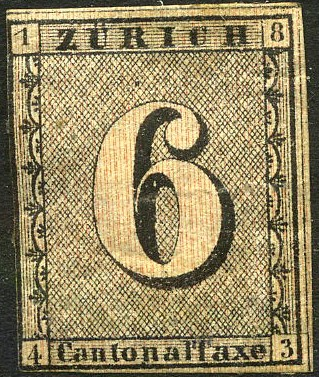
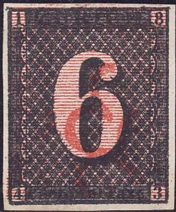
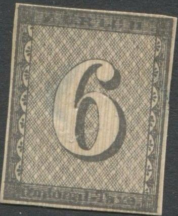
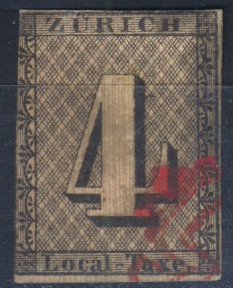

Return To Catalogue - Zurich forgeries, part 2 - Zurich - Switzerland overview
Note: on my website many of the
pictures can not be seen! They are of course present in the
catalogue;
contact me if you want to purchase the catalogue.
Forgeries exist with "1 8 4 3" in the corners (see images below) or "18" and "43" in the lower corners. I have seen a very rare proof with '18' and '43' in the lower corners.


"18" and "43" in the lower corners

Forgery which from a distance has an unusual 'pinkish' look.
The above forgeries have 1843 in the corners. Note that they are all different. These forgeries are described in Album Weeds (first four forgeries).

This forgery of the 4 r has the wrong inscription 'Cantonal -
Taxe' instead of 'Local - Taxe'. It is the fifth forgery of the 4
r described in Album Weeds.

In the above forgeries the tail of the '6' joins the central part
of the '6'. These are cuts from postcards made by Menke-Huber.

Menke-Huber postcard, the images were cut out and appear in many
collections....
The cancels in the above forgery betray them right away: such cancels were never used in Zurich.
Other, more deceptive forgeries:

This forgery of the 4 r has the word 'Taxe.' too far to the left.
Some other forgeries that do not correspond to any of the 5 types:


(images obtained thanks to Bill Claghorn's forgeries site:
http://members.tripod.com/claghorn1p/Switzerland/index.htm)


{kind=link}
{kind=link}
{kind=link}
{kind=link}
{kind=link}
{kind=link}